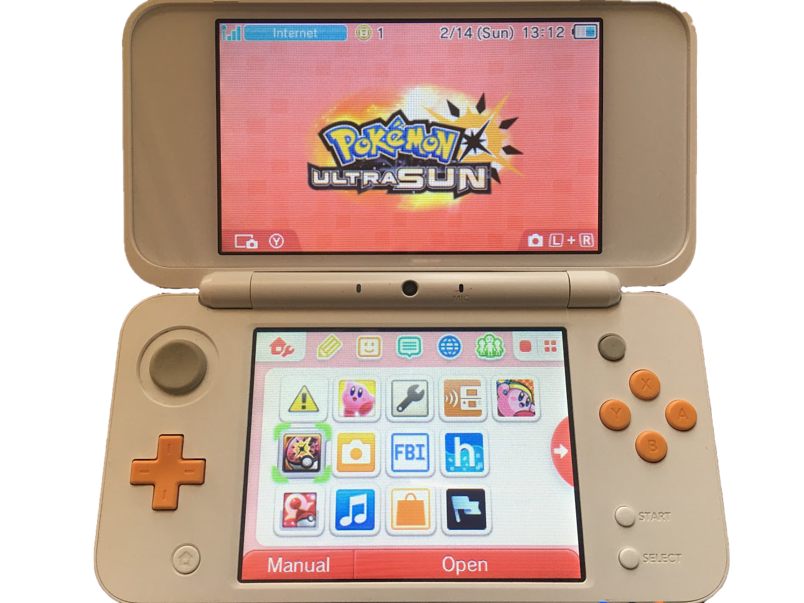

3DS Hacks Guide

A complete guide to 3DS custom firmware,from stock to boot9strap.
What is Homebrew?
Homebrew usually refers to software that is not authorized by Nintendo. This includes homebrew tools, applications, games, and emulators.
In many cases, running homebrew on your device is 100% free using just the Nintendo 3DS Sound app.
There are also various other exploits in commercial games and the browser to get homebrew running.
What is Custom Firmware?
Custom Firmware (“CFW”) enables you to use more advanced hacks that userland homebrew can’t easily do. For instance, signature patches let you install unsigned titles that appear right on your HOME Menu.
CFW can be set up on any console on any version (but may require additional tools / accessories for versions >11.3.0).
What does this guide install?
This guide has the end goal of taking a completely unmodified 3DS from stock firmware to boot9strap powered Custom Firmware. On some versions, it utilizes homebrew as a stepping off point, but Custom Firmware is still the goal.
boot9strap is the newest and best method of launching Custom Firmware that gives us nearly full control of the system only milliseconds into boot, which is similar to the effect of BootMii for the Wii. It gives us even earlier control than arm9loaderhax did, and, unlike standard sighax, boot9strap uses an NDMA overwrite exploit in order to gain Boot9 code execution. This means that any console running boot9strap is capable of dumping the console unique OTP (OTP.bin), the ARM11 bootrom (boot11.bin), and the ARM9 bootrom (boot9.bin).
The benefits of boot9strap over other Custom Firmware launch methods are numerous, and as such it is recommended to use this guide over any other that relies on outdated software (such as menuhax + rxTools, arm9loaderhax, or even normal sighax).
What can I do with Custom Firmware?
- Play all game cards and eShop games, regardless of region
- Customize your HOME Menu with user-created themes and splash screens
- Use “ROM hacks” for games that you own
- Take gameplay and application screenshots
- Backup, edit, and restore saves for many games
- Play games for older systems with various emulators, using RetroArch or other standalone emulators. (Works best with a New Nintendo 3DS)
- Install homebrew titles to your system, and have them appear on your HOME Menu
- Dump your game cards to a format you can install, and play them without needing the card
- New 3DS or New 2DS only: stream live gameplay to your PC wirelessly with NTR CFW
- Run many old Nintendo DS flash carts that were blocked long ago or never worked on Nintendo 3DS
- Safely update to the latest system version without fear of losing access to homebrew
What do I need to know before starting?
- Before beginning the guide, you must know the risks of 3DS hacking: EVERY time you modify your system, there is always the potential for an UNRECOVERABLE brick. They’re rare, but still a possibility so make sure you follow ALL directions EXACTLY.
- If you have already hacked your 3DS before to get an EmuNAND setup, and would like to move the contents of your previous EmuNAND to your new SysNAND CFW, you should follow all instructions and restore your existing EmuNAND when prompted once you reach Finalizing Setup.
- This guide will work on New 3DS, Old 3DS, New 2DS, and Old 2DS in all regions and all versions, including the latest version (11.14.0).
- If everything goes according to plan, you will lose no data and end up with everything that you started with (games, NNID, saves, etc will be preserved).
- Keep your device plugged in and charged throughout the entire process to avoid data loss or damage from an unexpected power-off!
- Your SD card should be MBR, not GPT (the SD card that comes with your device will be MBR by default). The easiest way to test this is to check if the SD card works in your 3DS. If it works, the SD card is MBR.
- you need to format a brand new SD card, you can format it to FAT32 using guiformat (Windows), Disk Utility (Mac), or cfdisk/gparted (Linux).
- The Old 2DS is essentially identical to the Old 3DS in terms of software, while the New 2DS is essentially identical to the New 3DS in terms of software. Any steps which say “Old 3DS” also apply to Old 2DS, and any steps which say “New 3DS” also apply to New 2DS.